Click a picture to open it live (the globes turn). Tell me the number.
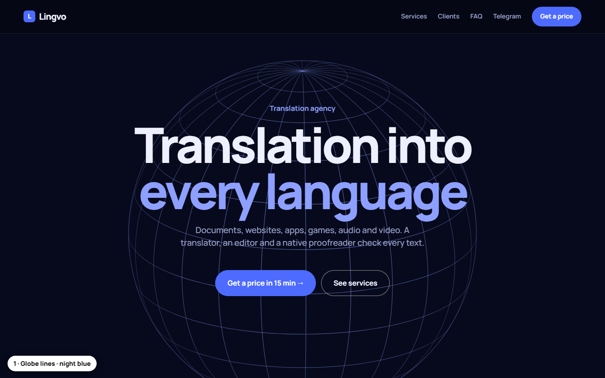
1Globe lines · night blue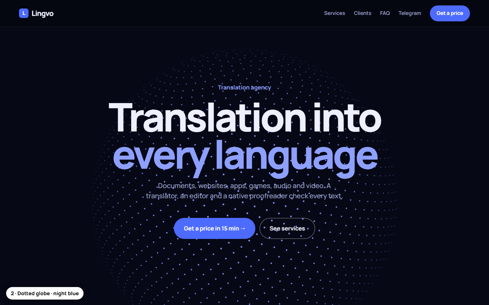
2Dotted globe · night blue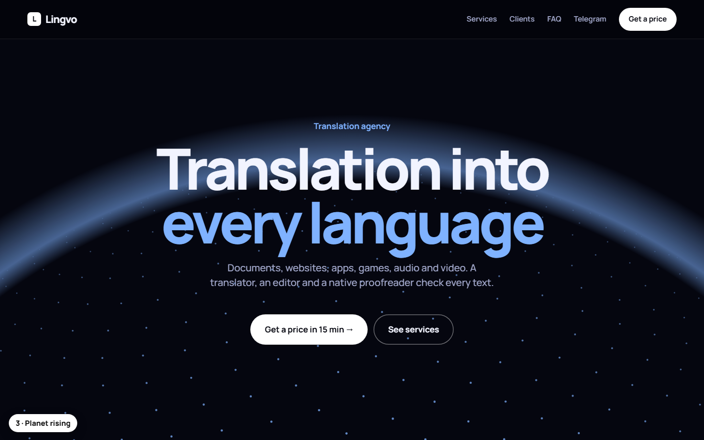
3Planet rising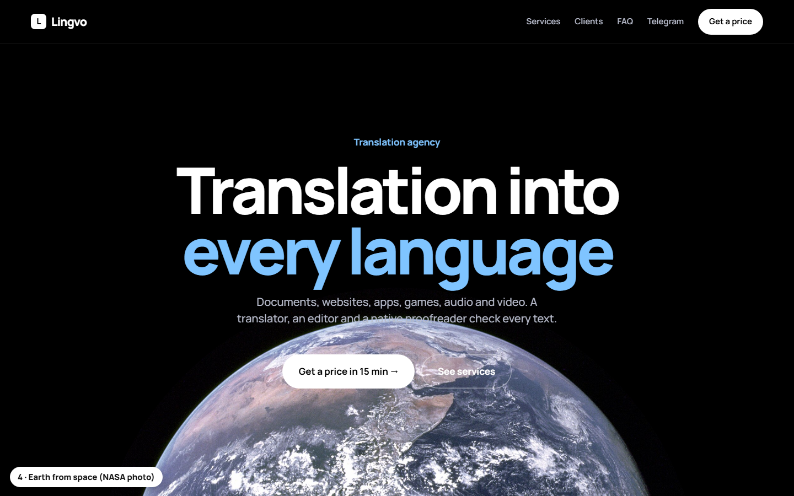
4Earth from space (NASA photo)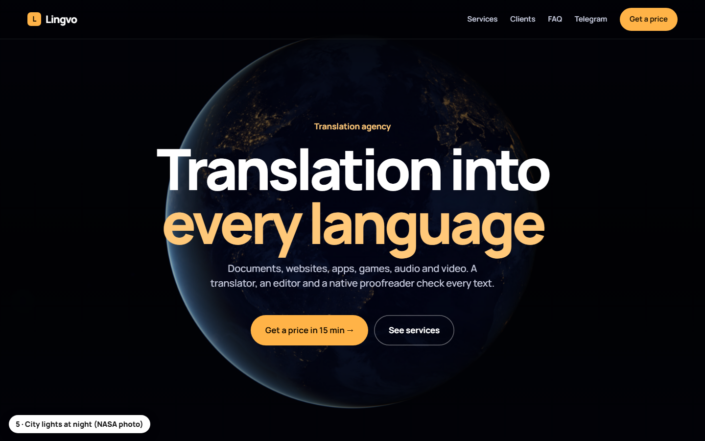
5City lights at night (NASA photo)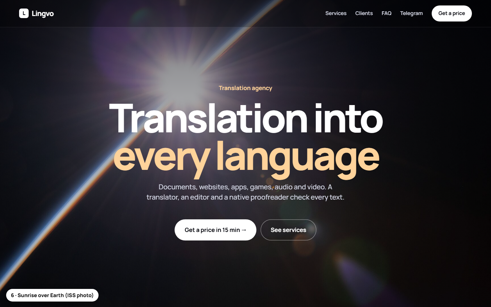
6Sunrise over Earth (ISS photo)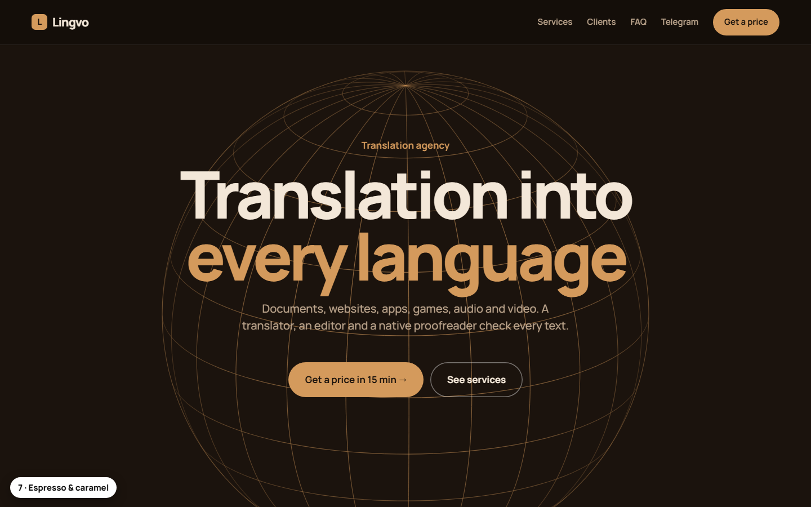
7Espresso & caramel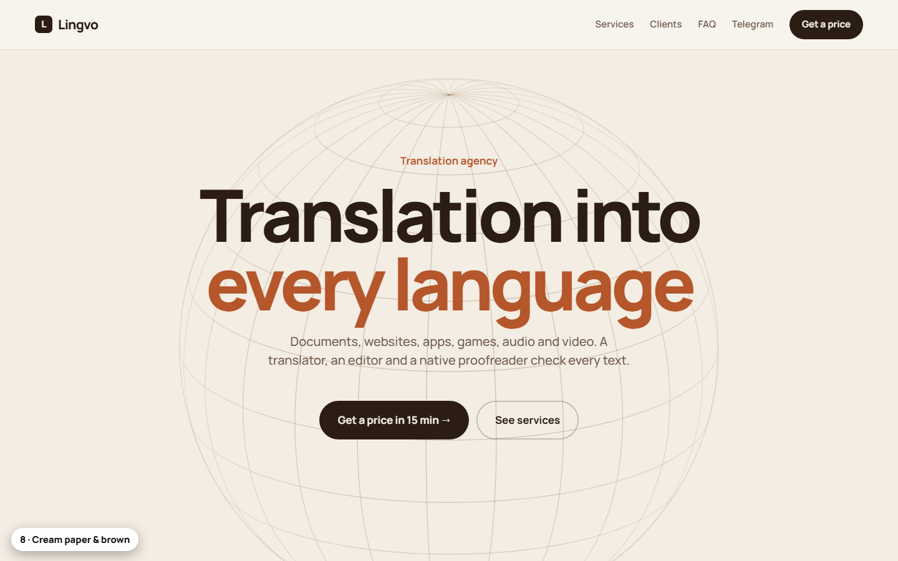
8Cream paper & brown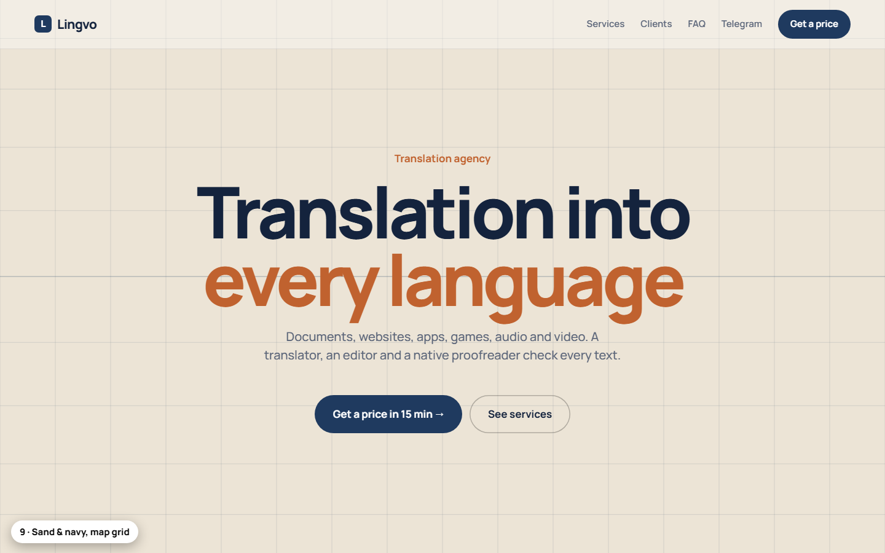
9Sand & navy, map grid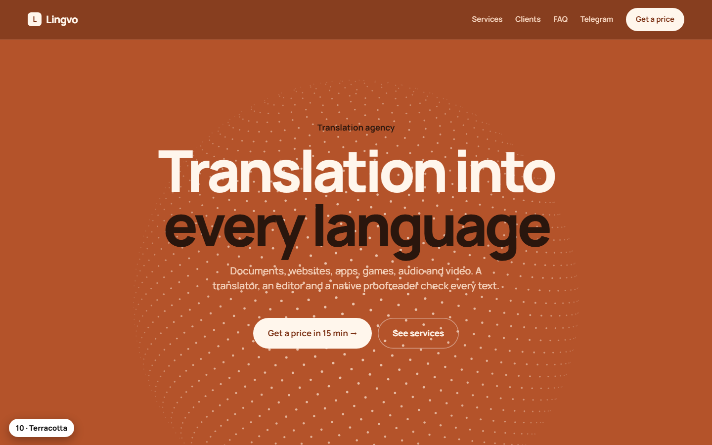
10Terracotta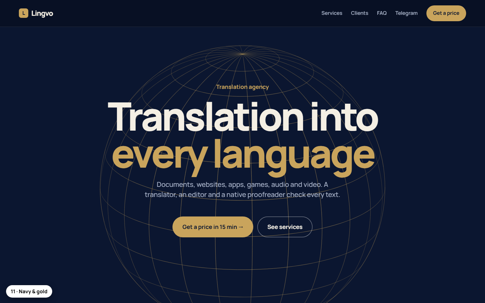
11Navy & gold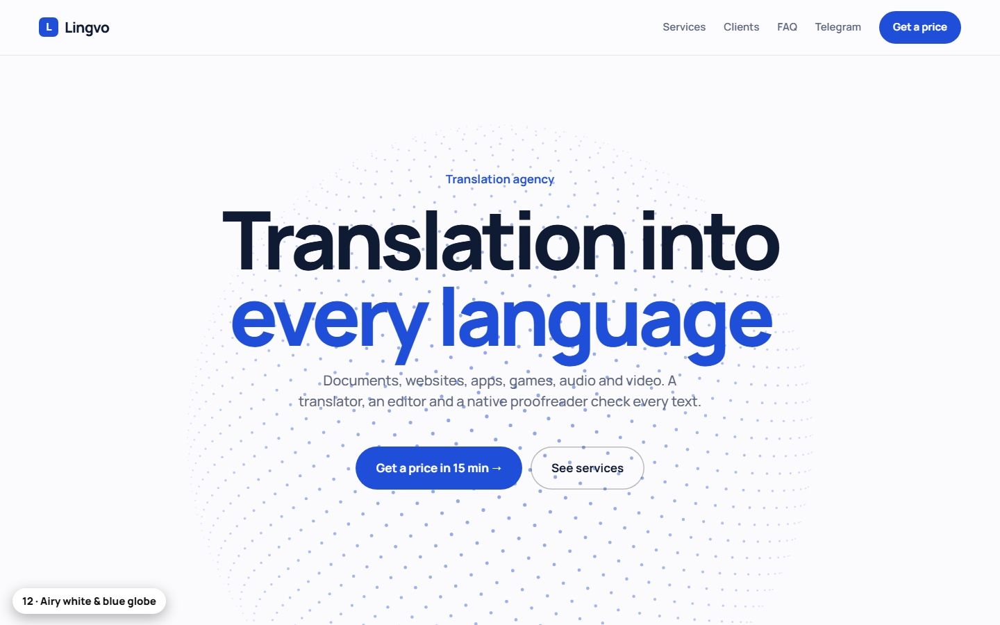
12Airy white & blue globe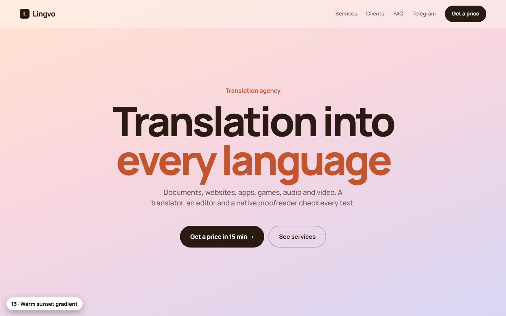
13Warm sunset gradient14“Hello” in every script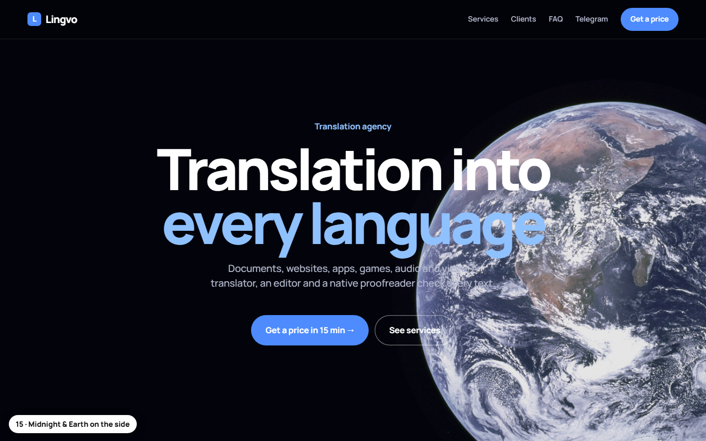
15Midnight & Earth on the side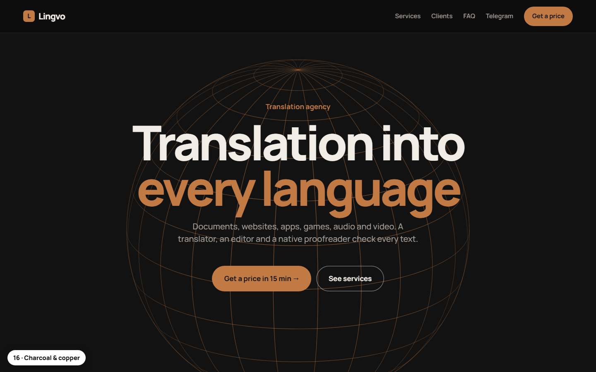
16Charcoal & copper